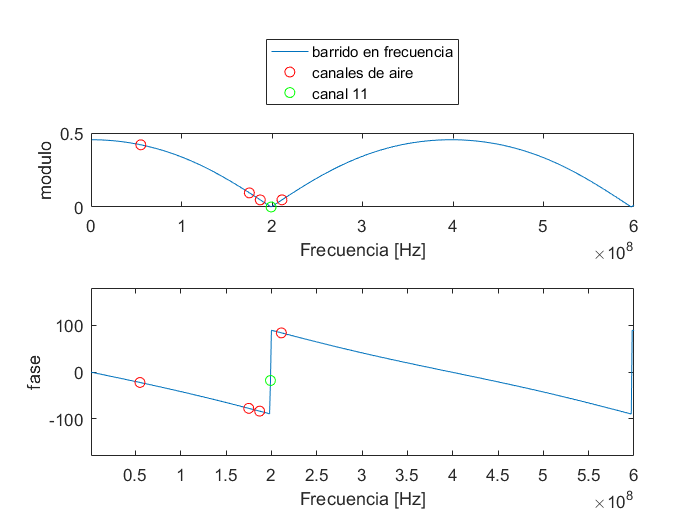
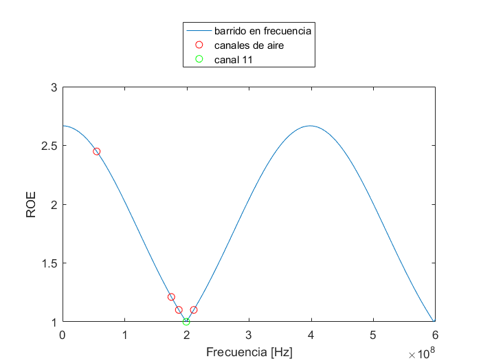
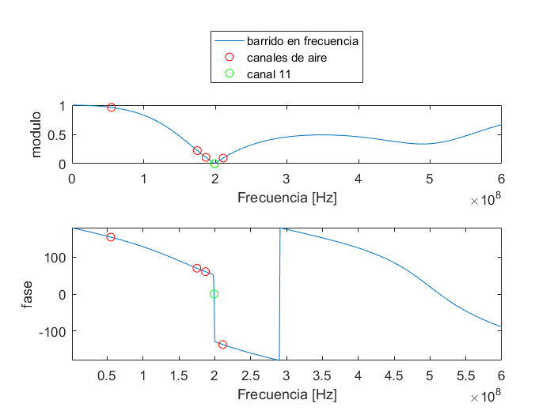
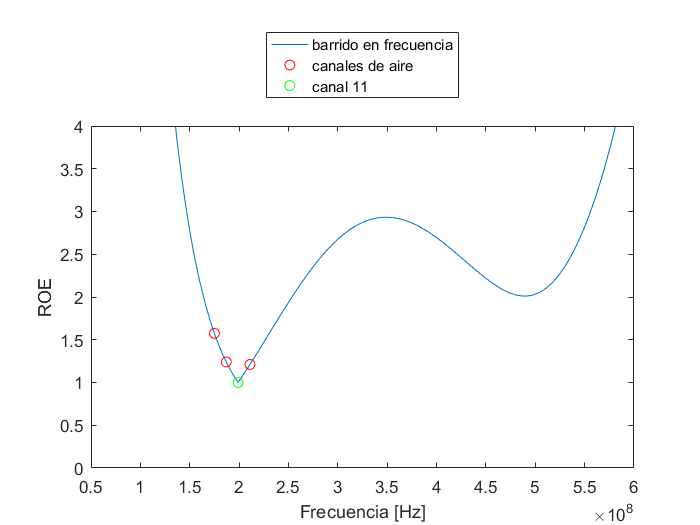

Contents
clear
close all
Zo = 75;
Zl = 200;
f = 1e6:1e6:600e6;
f_aire = [55e6 175e6 187e6 199e6 211e6];
fo = 199e6;
ROE = @(rho) ((1+abs(rho))./(1-abs(rho)));
rho = @(Zal) (Zal - Zo) ./ (Zal + Zo);
ADAPTADOR DE CUARTO DE ONDA
Za = sqrt(Zo*Zl);
Zal = @(f) (Za * (Zl + 1i*Za * tan((pi/2)*(f/199e6)))./ (Za + 1i*Zl * tan((pi/2)*(f/199e6))));
rho_barrido = rho(Zal(f));
rho_aire = rho(Zal(f_aire));
rho_canal = rho(Zal(fo));
fig_cuarto_de_onda = figure;
subplot(2,1,1);
plot(f,abs(rho_barrido))
hold on;
plot(f_aire, abs(rho_aire), 'ro')
hold on;
plot(fo, abs(rho(Zal(fo))), 'go')
legend('barrido en frecuencia','canales de aire', 'canal 11');
legend('Location','northoutside')
xlabel('Frecuencia [Hz]')
ylabel('modulo')
subplot(2,1,2);
plot(f,rad2deg(angle(rho_barrido)))
hold on;
plot(f_aire, rad2deg(angle(rho_aire)), 'ro')
hold on;
plot(fo, rad2deg(angle(rho_canal)), 'go')
axis([f(1) f(end) -180 180])
xlabel('Frecuencia [Hz]')
ylabel('fase')
saveas(fig_cuarto_de_onda,'rho_cuarto_de_onda.png')
ROE_barrido = ROE(rho_barrido);
ROE_aire = ROE(rho_aire);
ROE_canal = ROE(rho(Zal(fo)));
fig_roe_cuarto_de_onda = figure;
plot(f,ROE_barrido)
hold on;
plot(f_aire, ROE_aire , 'ro')
hold on;
plot(fo, ROE_canal , 'go')
legend('barrido en frecuencia','canales de aire', 'canal 11');
legend('Location','northoutside')
xlabel('Frecuencia [Hz]')
ylabel('ROE')
saveas(fig_roe_cuarto_de_onda,'ROE_cuarto_de_onda.png')
f_aceptables_cuarto_de_onda = f(ROE_barrido <= 2);
ancho_de_banda = [];
incluir = true;
for x = 1:length(f_aceptables_cuarto_de_onda)
if x == 1 || x == length(f_aceptables_cuarto_de_onda)
incluir = true;
elseif f_aceptables_cuarto_de_onda(x+1) - f_aceptables_cuarto_de_onda(x) > 1e6
incluir = true;
elseif f_aceptables_cuarto_de_onda(x) - f_aceptables_cuarto_de_onda(x-1) > 1e6
incluir = true;
end
if incluir
ancho_de_banda = [ancho_de_banda f_aceptables_cuarto_de_onda(x)];
incluir = false;
end
end
 
STUB
Beta_ls = @(f)( (f/fo) * atan(sqrt(Zl*Zo)/(Zl-Zo)));
Zstub = @(Beta_l) ( 1i*Zo * tan(Beta_l) );
Beta_ds = @(f) ((f/fo) * atan(sqrt(Zl/Zo)));
Zds = @(Beta_l) (Zo * (Zl + 1i*Zo * tan(Beta_l))./ (Zo + 1i*Zl * tan(Beta_l)));
Zadaptador = @(Zstub, Zds) (1./Zstub + 1./Zds).^-1;
rho_barrido = rho(Zadaptador(Zstub(Beta_ls(f)), Zds(Beta_ds(f))));
rho_aire = rho(Zadaptador(Zstub(Beta_ls(f_aire)), Zds(Beta_ds(f_aire))));
rho_canal = rho(Zadaptador(Zstub(Beta_ls(fo)), Zds(Beta_ds(fo))));
fig_stub = figure;
subplot(2,1,1);
plot(f,abs(rho_barrido))
hold on;
plot(f_aire, abs(rho_aire), 'ro')
hold on;
plot(fo, abs(rho_canal), 'go')
legend('barrido en frecuencia','canales de aire', 'canal 11');
legend('Location','northoutside')
xlabel('Frecuencia [Hz]')
ylabel('modulo')
subplot(2,1,2);
plot(f,rad2deg(angle(rho_barrido)))
hold on;
plot(f_aire, rad2deg(angle(rho_aire)), 'ro')
hold on;
plot(fo, rad2deg(angle(rho_canal)), 'go')
axis([f(1) f(end) -180 180])
xlabel('Frecuencia [Hz]')
ylabel('fase')
saveas(fig_stub,'stub.png')
f = 50e6:1e6:600e6;
rho_barrido = rho(Zadaptador(Zstub(Beta_ls(f)), Zds(Beta_ds(f))));
ROE_barrido = ROE(rho_barrido);
ROE_aire = ROE(rho_aire);
ROE_canal = ROE(rho_canal);
fig_roe_stub = figure;
plot(f,ROE_barrido)
hold on;
plot(f_aire,ROE_aire , 'ro')
hold on;
plot(fo, ROE_canal, 'go')
legend('barrido en frecuencia','canales de aire', 'canal 11');
legend('Location','northoutside')
xlabel('Frecuencia [Hz]')
ylabel('ROE')
axis([f(1) f(end) 0 4]);
saveas(fig_roe_stub,'ROE_stub.png')
f_aceptables_stub = f(ROE_barrido <= 2);
ancho_de_banda_stub = [];
incluir = true;
for x = 1:length(f_aceptables_stub)
if x == 1 || x == length(f_aceptables_stub)
incluir = true;
elseif f_aceptables_stub(x+1) - f_aceptables_stub(x) > 1e6
incluir = true;
elseif f_aceptables_stub(x) - f_aceptables_stub(x-1) > 1e6
incluir = true;
end
if incluir
ancho_de_banda_stub = [ancho_de_banda_stub f_aceptables_stub(x)];
incluir = false;
end
end
 